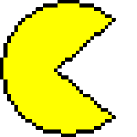

MATT'S
PORTFOLIO
PORTFOLIO

I'm Matt, very EPIC guy! 😎
Senior at Allen High School.
Senior at Allen High School.
Where it all started
It was around the end of 8th grade when I got into programming. I was watching a video on Call of Duty and the health system of a zombie and was interested in how it functioned. At that time I was interest games but as time progressed I slowly got interested in other topics such as algorithms.
Why make this portfolio?
As an individual, I want to share what I learn and look at my progress. This includes abritrary topics I learn daily or core classes I take in school. I also made this with the goal of sharing my experience with other individuals that I've worked with.
It was around the end of 8th grade when I got into programming. I was watching a video on Call of Duty and the health system of a zombie and was interested in how it functioned. At that time I was interest games but as time progressed I slowly got interested in other topics such as algorithms.
Why make this portfolio?
As an individual, I want to share what I learn and look at my progress. This includes abritrary topics I learn daily or core classes I take in school. I also made this with the goal of sharing my experience with other individuals that I've worked with.